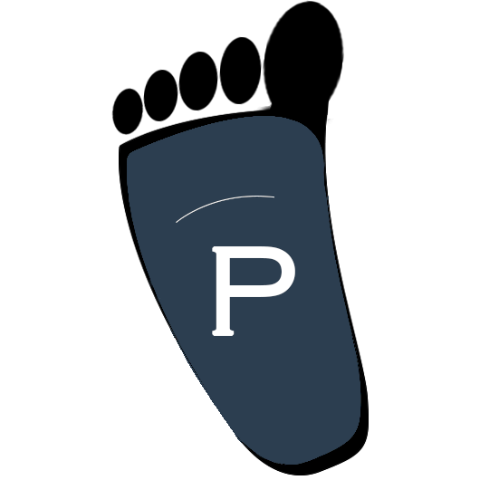

<div>
  <mat-toolbar style="background-color: #2C3E50; color: white;">
    <div fxHide.gt-sm="true" style="display: inline-block;">
      <mat-icon class="pointer" style="vertical-align: middle"
                (click)="sidenav.toggle()">menu</mat-icon>
    </div>
    <div fxShow="true" fxHide.lt-md="true">
      

    </div>
    <span class="pointer site-name side-container" routerLink="/" >Pedibus</span>

    <div fxShow="true" fxHide.lt-md="true" fxLayout="row"  fxLayoutAlign="center center"  class="menu-container" style="width:100%">
      <!-- The following menu items will be hidden on both SM and XS screen sizes -->
      <span fxFlexAlign="start" fxFlex="2 1 80%" fxLayoutAlign="center center">
        <a *ngFor="let link of entries" [routerLink]="link.url" mat-button class="menu-element">{{link.displayName}}</a>
      </span>
    </div>

    <span fxShow="true" fxHide.lt-md="true" fxLayoutAlign="space-evenly center"
          *ngIf="auth.isLoggedIn$ | async" class="side-container">

        <div mat-card-avatar class="avatar"></div>
        <div fxLayout="column" fxLayoutAlign="center center">
          <span class="logged-user-style" *ngIf="auth.currentUser$ | async as user">
            <span class="user-email" [matMenuTriggerFor]="userMenu">{{user.email}}</span>
          </span>
          <!--a (click)="auth.logout()" routerLink="/login" mat-button class="pointer logged-user-style">Logout</a-->
        </div>
        <mat-menu #userMenu="matMenu">
          <button mat-menu-item >Il mio profilo</button>
          <button mat-menu-item (click)="auth.logout()" routerLink="/login">Logout</button>
        </mat-menu>

        <mat-icon matBadge="1" matBadgePosition="above after">notifications</mat-icon>
    </span>

    <span fxShow="true" fxHide.lt-md="true" fxLayoutAlign="end center" class="side-container" *ngIf="!(auth.isLoggedIn$ | async)">

      <a routerLink="/registrazione" mat-button class="menu-element">Registrazione</a>

      <a routerLink="/login" mat-button class="menu-element">Login</a>

    </span>

  </mat-toolbar>

  <mat-sidenav-container>
    <mat-sidenav #sidenav fxLayout="column">
      <div fxLayout="column" fxLayoutAlign="center">
        <a (click)="sidenav.toggle()" class="pointer" mat-button>Close</a>
        <span>
          <a *ngFor="let link of entries" [routerLink]="link.url" mat-button class="menu-element">{{link.displayName}}</a>
        </span>
        <span>
          <a *ngIf="user === null" routerLink="/login" mat-button class="menu-element">Login</a>
          <span *ngIf="user !== null" class="menu-element">
            {{user._email}}<br>
              <a (click)="auth.logout()" routerLink="/login" mat-button class="pointer">Logout</a>

          </span>
        </span>
      </div>
    </mat-sidenav>

    <!--mat-sidenav-content style="width: 100%; height: 100vh;">
      <div style="margin: auto;">
        <router-outlet></router-outlet-->
    <!--mat-sidenav-content fxFill fxLayoutAlign="center center" style="overflow: hidden;"-->
    <mat-sidenav-content style="width: 100%; height: 100vh;">
      <div fxFill>
      <router-outlet></router-outlet>
      </div>
    </mat-sidenav-content>
  </mat-sidenav-container>
  <mat-toolbar style="background-color: #2C3E50; color: white;">
    <span class="pointer">Powered by NapalmBeer Inc. &copy;</span>
  </mat-toolbar>
</div>
